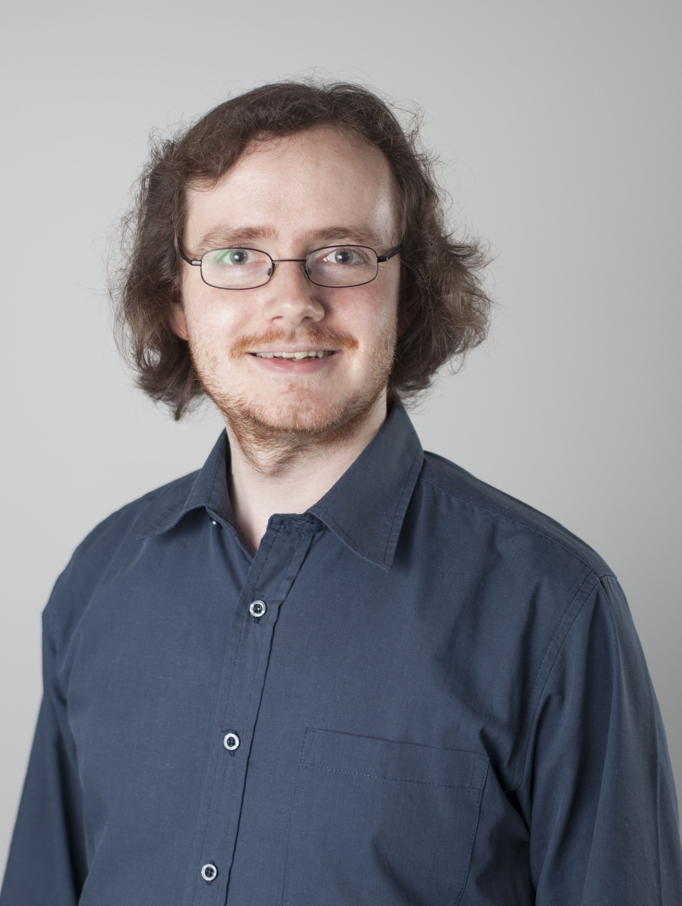

About
Dr.-Ing. Gerhard Kurz

- Research scientist at Bosch corporate research
- Previously postdoctoral researcher at ISAS, IAR, KIT
- ResearchGate
- ORCID
- Google Scholar
- Github
- Mail: kurz dot gerhard at gmail dot com
Academic Career
- since 2018
- Research scientist at Bosch corporate research
- 2017-2018
- Vice director at Intelligent Sensor-Actuator-Systems Lab, Department of Computer Science, Karlsruhe Institute of Technology (KIT).
- 2015-2018
- Postdoctoral researcher at the Intelligent Sensor-Actuator-Systems Lab, Department of Computer Science, Karlsruhe Institute of Technology (KIT).
- 02/2015
- Graduation as Dr.-Ing. (summa cum laude), Karlsruhe Institute of Technology (KIT)
- Advisors: Uwe D. Hanebeck, Anders Lindquist
- PhD Thesis: Directional Estimation for Robotic Beating Heart Surgery
- 2012-2015
- Research assistant at the Intelligent Sensor-Actuator-Systems Lab, Department of Computer Science, Karlsruhe Institute of Technology (KIT).
- 01/2012
- Completion of diploma thesis at Fraunhofer IOSB
- 2006-2012
- Student of computer science at the KIT
Teaching
- Lecture “Lokalisierung mobiler Agenten” (localization of mobile agents) (SS 2016 and SS 2017)
- Lab project “Forschungsprojekt: Anthropomatik praktisch erfahren” (research project: hands-on anthropomatics) (SS 2012-WS 2017/18)
Awards
- 12/2019
- Jungwissenschaftler der Stiftung Werner-von-Siemens-Ring, List of award winners, Announcement, Article
- 07/2016
- Teaching Award “Best laboratory experiment” of the Faculty of Informatics in 2015 List of winning courses, Certificate (PDF)
- 04/2016
- Südwestmetall-Förderpreis 2016 für den wissenschaftlichen Nachwuchs Certificate (PDF), Article by the Faculty of Computer Science, List of award winners
- 09/2015
- Best Paper Award Nominee, MFI 2015, “Toroidal Information Fusion Based on the Bivariate von Mises Distribution” Certificate (PDF)
- 07/2015
- Teaching Award “Best laboratory experiment” of the Faculty of Informatics in the summer term 2014 Certificate (PDF)
- 07/2014
- Best Paper Award, Fusion 2014, “Deterministic Approximation of Circular Densities with Symmetric Dirac Mixtures Based on Two Circular Moments” List of award winners, Certificate (PDF)
- 07/2014
- Best Student Paper Award First Runner-Up, Fusion 2014, “A New Probability Distribution for Simultaneous Representation of Uncertain Position and Orientation” List of award winners, Certificate (PDF)
- 06/2014
- Best Presentation of the Session, ACC 2014, “Nonlinear Measurement Update for Estimation of Angular Systems Based on Circular Distributions”, List of award winners (PDF)
- 07/2013
- Best Paper Award, Fusion 2013, “Recursive Fusion of Noisy Depth and Position Measurements for Surface Reconstruction”, List of award winners, Certificate (PDF)
- 07/2013
- Best Student Paper Award First Runner-Up, Fusion 2013, “Recursive Estimation of Orientation Based on the Bingham Distribution”, List of award winners, Certificate (PDF)
- 06/2013
- Best Presentation of the Session, ACC 2013, “Recursive Nonlinear Filtering for Angular Data Based on Circular Distributions”, List of award winners
Further Activities
- Since 2015
- Lead author of https://github.com/libDirectional/libDirectional, a MATLAB library for directional statistics and directional estimation
- 12/2021
- Workshop contribution “Multiple Instance Learning for Brain Tumor Detection with Magnetic Resonance Spectroscopy Data” (Poster) by Diyuan Lu, Gerhard Kurz, Nenad Polomac, Iskra Gacheva, Elke Hattingen, Jochen Triesch at “NewInML Workshop” at NeuroIPS 2021
- 05/2021
- Workshop contribution “Multiple Instance-Based Tumor Detection from Magnetic Resonance Spectroscopy Data” by Diyuan Lu, Gerhard Kurz, Nenad Polomac, Iskra Gacheva, Elke Hattingen and Jochen Triesch at “ICLR Workshop AI for Public Health” at ICLR 2021
- 07/2017
- Chair of the Session Direction/Frequency Tracking, International Conference on Information Fusion (FUSION 2017)
- 12/2016
- Guest Editor for the Special Issue on Estimation Involving Directional Quantities of the Journal of Advances in Information Fusion
- 09/2016
- Co-Chair of the Session “Localization, Tracking and Navigation”, 2016 IEEE International Conference on Multisensor Fusion and Integration for Intelligent Systems (MFI 2016)
- 07/2016
- Co-organizer of the Special Session “Directional Estimation”, International Conference on Information Fusion (FUSION 2016)
- 07/2015
- Co-organizer of the Special Session “Directional Estimation”, International Conference on Information Fusion (FUSION 2015)
- Chair of the Session “Predictive Control”, 2015 American Control Conference (ACC 2015)
- 09/2014
- Co-Chair of the Session “Signal Processing”, 2014 IEEE International Conference on Multisensor Fusion and Information Integration (MFI 2014)
- 07/2014
- Co-organizer of the Special Session “Directional Estimation”, International Conference on Information Fusion (FUSION 2014)
- 07/2013
- Co-organizer of the Special Session “Angular Estimation”, International Conference on Information Fusion (FUSION 2013)
Selected Talks
- 01/2018
- Presentation at Intelligent Autonomous Systems (IAS) Lab, TU Darmstadt, Darmstadt, Germany
- 08/2017
- Presentation at Autonomous Systems Lab, ETH Zürich, Zürich, Switzerland
- 09/2016
- “Nonlinear Recursive Estimation Based on Directional Statistics”, Department of Statistics, School of Mathematics, University of Leeds, Leeds, United Kingdom
- 12/2015
- “Estimation Based on Directional Statistics for Robotic Beating Heart Surgery with Automatic Motion Compensation”, National Institute of Informatics, Tokyo, Japan
- 09/2015
- “Beyond the EKF - Introduction and Application of Advanced Nonlinear Filtering Techniques”, Tutorial at MFI 2015 (with Igor Gilitschenski), San Diego, California, USA
- 03/2015
- “Directional Estimation”, Department of Communications Engineering, University of Paderborn, Paderborn, Germany